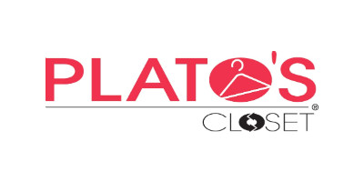

EDUCATION(2011-2015) CHESTATEE HIGH SCHOOLDuring my time at Chestatee High School I focused on math and business classes. I knew that I wanted to pursue a Business Management Degree while in college, therefore I tired to take high school courses to prepare me. I took many classes including:
I also interned at the in school printing shop where I managed the website, online orders and shipment of orders. This helped me to better understand the behind the scenes working of a business. I better understood the importance of clear communications and efficient work schedules after interning with this business. I also gained more experienced in managing people within a business. I spent the majority of my time communicating and directing the people filling the orders made with our business. This opportunity was my initial exposure to a work environment, therefore I credit this experience for teaching my everything I know about working with others in professional situations. (2015-Present) UNIVERSITY OF GEORGIAFor the past two years I have been prusing a major in Business Managment at The University of Georgia.
|
|---|
| References | Plato's Closet Store Manager: 706-222-1111
Kroger Front In Manager: 770-333-4444 |
WORK EXPERIENCEKROGER
I served as a cashier and customer service representative for two years at Kroger in Gainesville, Georgia. I enjoyed interacting and assisting customers in any way possible. During my time with this company I gained many soft skills that helped prepare me for future interviews and job opportunities. I perfected my time management skills. I had to learn how to plan my time around my work schedule, school work and personal life. I also learned how to work on a team. My daily shifts included myself, many other co workers and customers. I had to learn how to adjust my actions to play to the strengths and weaknesses of others for the sake of the team. Other all, this simple high school job helped to make me into the employee and professional I am today. I left the company on good terms to attend school at University of Georgia during the fall of 2015. KrogerPLATO'S CLOSET I am currently employed at Plato’s Closet in Athens, Georgia. At this job I have been able to put into practice all the skills I learned from my previous employment at Kroger. When I began this job I did very similar tasks as my previous employment. I work at a register and provided customer service after months of this type of work, I quickly began to move up the ladder with this company. I am now a supervisor at Plato’s Closet Athens. As a manager my responsibilities include providing customer service, counting the registers each night before close, managing the employees under me and overall making sure the store runs properly and efficiently. This position really put me out of my comfort zone because I had never been in a management position at my previous employment. As a result of this job I am very comfortable being a leader within a company. During my previous employee review my store manager said: |  |
|---|